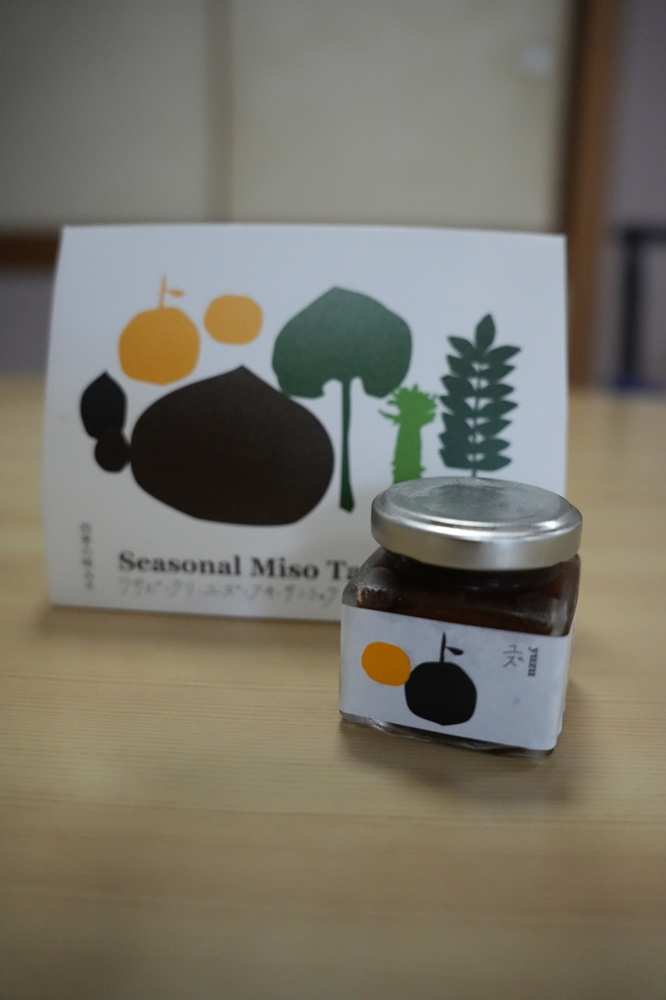
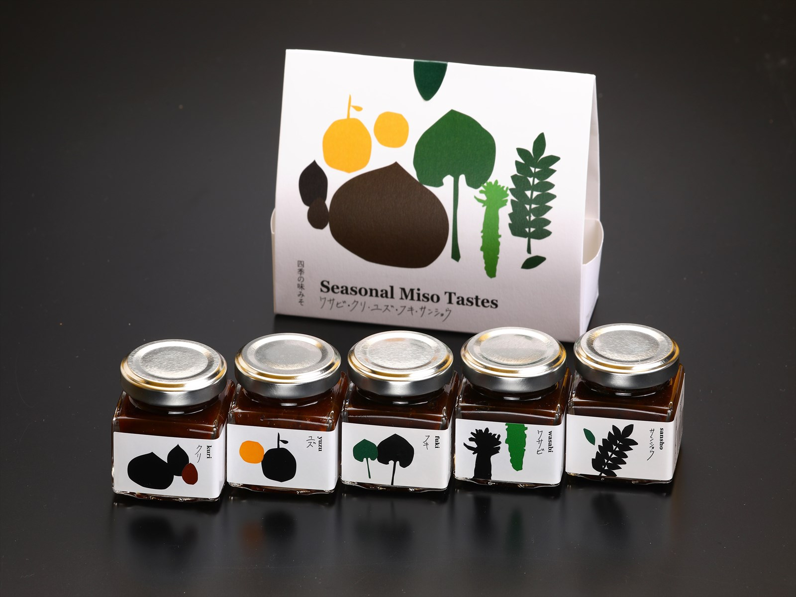

Purely Handmade

Fujinosato Kobo was born when people who share a desire to deliver authentic food gathered in the land embraced by Miyoshi’s rich nature. Their unwavering belief is to work directly with the soil and draw out the fullest potential of each ingredient without relying on pesticides or additives. This miso—made from soybeans and koji grown completely without pesticides and prepared by traditional handcraft—carries a deep love for the homeland and a strong will to pass Japan’s culinary culture on to the next generation.
A Miso That Captures the Seasons

Shiki no Miso is a miso that captures in a jar the blessings nurtured by Miyoshi’s four seasons—spring’s new buds, summer’s sunlight, autumn’s harvest, and winter’s stillness. Carefully handcrafted from koji and blended from barley and rice, it develops a complex and profound umami. It shines in traditional miso soup and also plays beautifully as a secret note in pasta sauces or to add depth to stir-fries. With every spoonful, feel the air and the passage of time of this land.